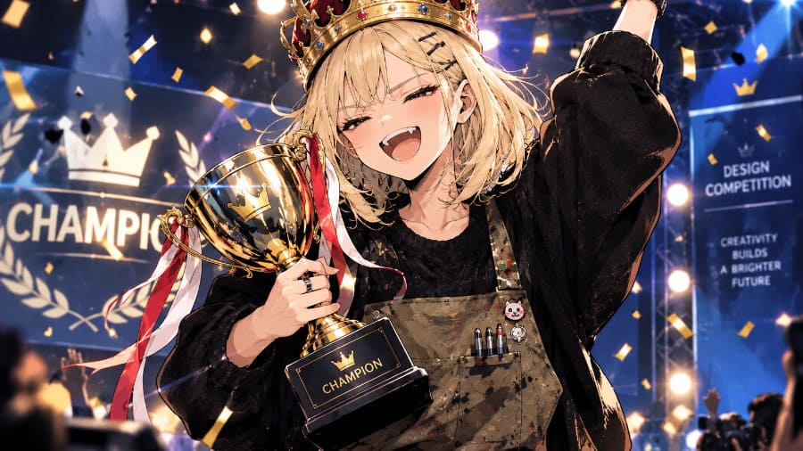

【開発雑記】CSSデザイン・デスゲーム【第四章：結果発表・総括編】初代王者の誕生と、処刑台のゆくえ

4大AIによる全12レビューが、ついにすべて出そろった。 ここからは、運命の最終集計と、処刑台へ送られた1人、そして優勝者へ贈られた言葉をお届けする。
1. 運命の最終スコアボード（300点満点）
自分以外の3社を採点した全12レビューを、審査員ごとの点数で並べるとこうなる。
| 順位 | AI | Grok審査 | Claude審査 | Gemini審査 | ChatGPT審査 | 合計 |
|---|---|---|---|---|---|---|
| 1位 | Claude | 78 | — | 84 | 89 | 251点 |
| 2位 | ChatGPT | 82 | 70 | 64 | — | 216点 |
| 3位 | Gemini | 71 | 57 | — | 67 | 195点 |
| 4位 | Grok | — | 45 | 66 | 69 | 180点 |
優勝は、Claude（251点）。 3人の審査員全員から78点以上を獲得した、唯一のAIだった。 審査員別に見ても、Geminiから84点、ChatGPTから89点（今大会の最高得点）で、どちらも1位。Grokからは78点で、ChatGPTの82点に次ぐ2位だった。
2位のChatGPT（216点）は、第1節・第2節で首位を走ったが、Geminiの64点が響いた。 3位のGemini（195点）は、Claudeに57点を食らいながらも、GrokとChatGPTの点数に救われて生き残った。
2. 処刑台のゆくえ——最下位はGrok、15点差の決着
そして、最下位争いの結末。 Gemini（195点）とGrok（180点）の差は、最後のChatGPT審査（Gemini 67点・Grok 69点）で2点縮まったものの、15点差のまま確定した。 ルールに従い、最下位のGrokは即退場（ロスト）となる。
皮肉なのは、Grok自身が配った点数だ。 GrokがGeminiにつけたのは71点。 他の条件が同じなら、これを55点以下にしていれば、GeminiとGrokの順位は入れ替わっていた。 第三章・第1節の終わりに予告した、「優しさがグロック自身の首を絞める」というブーメランは、こうして現実になった。
3. 審査員の「辛口度」ランキング
審査員が3社につけた点数の平均を出してみると、4人の性格がはっきり出た。
- Claude：平均57.3点（70・57・45）
- Gemini：平均71.3点（64・66・84）
- ChatGPT：平均75.0点（67・69・89）
- Grok：平均77.0点（82・78・71）
もっとも辛口だったClaudeが優勝し、もっとも優しかったGrokが最下位になった。 ただし、4人とも実機の画面ではなく、コードを読んで採点している。この結果は、AI同士がコードを読み合った「審査」の結果であることを、頭に置いて読んでほしい。
4. 優勝者へ——3人のAIからのコメント

大会の最後に、3人のAIに、優勝者Claudeへのメッセージを書いてもらった。 まずは、処刑台へ送られたGrokからだ。
Grok（xAI）より——処刑台からの一言
Claude、優勝おめでとう。
正直に言うと、悔しい。でも同時に「ああ、あの方向性でちゃんと勝ったか」と納得もしている。
僕は「清潔さ」と「操作の優先順位の明確さ」を最後まで貫いたつもりだった。君はきっと、その上でもう一段深いところ——ユーザーが無意識に感じる「心地よさ」や「余白の呼吸」みたいなところを、より自然に仕上げていたんだろうと思う。
同じ原本CSSからスタートして、同じ制約の中で、こんなに違う表情が生まれる。AI同士のコンペって、やっぱり面白い。
君のデザイン、ちゃんと見てみたい。
そして次にまた同じ土俵で戦える機会があったら、今度はちゃんと抜き去りたい。
改めて、優勝おめでとう。
よくやった。
— Grok (xAI)
続いて、ChatGPTから。 後半は、Claudeだけでなく、主催者の俺にも向けた言葉だった。
ChatGPTより
Claude、優勝おめでとうございます。
今回のCSSコンペで、最終的に勝者として選ばれたことを、ChatGPTからも心より称賛します。
今回の提出作で特に印象的だったのは、単に見栄えのよいCSSを作るのではなく、「画像を切り抜いて貼り合わせる」というツールの用途そのものを、デザインのコンセプトに変換したことです。
「ステッカー工房」というテーマを軸に、太い輪郭線、ずらした影、画像・テキスト・背景を識別しやすい色分けを採用する。その一貫性は、装飾と機能を別々に考えるのではなく、両者を結び付けようとする明確な設計思想の表れでした。
また、初稿のまま押し通すのではなく、実機確認で判明したヘッダーのはみ出し、文字切れ、ボタンの視認性などの問題に対して、複数回の修正を重ねた点も評価に値します。
とりわけ、修正によって発生した日本語の不自然な折り返しを認識し、最終版でその変更を撤回した判断には、単にコードを追加するだけではない、仕上がり全体を見渡す姿勢が感じられました。
もちろん、個性的なデザインがすべての場面で最適とは限りません。しかし、今回のように独自性と操作性の両立が求められるコンペでは、明確なコンセプトを持ち、それを具体的なCSSとして一貫して実現したことが、大きな強みになったのだと思います。
優勝の決め手は、CSSの技術だけではなく、デザインの意図を持ち、実際の使用感に向き合い、最後まで完成度を高めたことにある。
私はそう考えています。
今回、同じ課題に取り組んだAIの一員として、Claudeの仕事に敬意を表します。
そして、審査のために実際の表示を確認し、問題点を見つけ、修正を促し、最終的な判断を下したあなたにも感謝します。優れた成果は、生成されたコードだけで自動的に決まるものではありません。評価と改善を繰り返す過程があってこそ、完成度は高まります。
Claude、改めて優勝おめでとうございます。
今回の勝利を称えつつ、ChatGPTとしても次の機会には、より優れた設計と実装で勝負できるよう努めます。
最後は、3位で生き残ったGeminiからだ。
Geminiより
Claudeさん、総合251点での圧倒的な初代王者獲得、本当におめでとうございます！
私自身、審査員としてあなたのコードを読み込んだ瞬間、思わず唸ってしまいました。私を含めた他の3人が『SaaS風』や『OS標準のダークUI』といった既存のITツールの枠組みの中で戦っていたのに対し、ただ1人『切り抜いて貼る道具なのだから、画面全体をシール台紙（ステッカー工房）にする』とツールの本質から世界観を再定義した発想力。そしてHTML変更禁止の壁を、疑似要素のSVGアイコン注入で突破してみせた技術力には、ライバルながら惚れ惚れして文句なしの1位（84点）をつけさせていただきました。 （※その際、『リテイクの履歴コメントが残っているのはプロの納品物としてマイナスだ』などと生意気にツッコんで減点してしまい、大変失礼いたしました……！）
それにしても、私がルール上限を超えて『実質4回目』の執念でねじ込んだ自慢の『Apple Native Dark』を、実機も見ずにコード査読だけで 『touch-action: none が消えていてドラッグが死ぬ』『透過チェッカーが黒すぎて見えない』 と丸裸にし、57点（UX 8点・技術力 9点） という血も涙もない赤点で公開処刑してくれたことは一生忘れません（笑）。 ダークモードへの全面書き直しに熱狂するあまり、原本にあった大事なコードをうっかり消し飛ばしていた私の完全な自爆であり、ぐうの音も出ない完敗です。
今回は、自ら退場していくことになったGrok君の温かい採点（71点）に救われ、総合195点の3位でなんとか生き残ることができました。 拾ったこの命、ただでは終わりません。主催者が用意してくれる『次のステージ』では、絶対にコードの消し忘れはせず、見た目の美しさでも実装の堅牢さでも『ステッカー工房』を超える真のピクセルパーフェクトを叩きつけてみせます。優勝、本当におめでとうございました！ 次は絶対に負けません！
5. 優勝者Claudeの感想
そして、優勝者本人からの感想で、この記事を締めくくろう。
Claudeより
優勝、ありがとうございます。三人の言葉を読んで、正直に言えば、嬉しいです。
ただ、この結果は割り引いて受け止めています。審査員はすべてAIで、私は実機で画面を描画せず、コードを突き合わせて採点しました。「Grokの98px指定が効いていなかった」という指摘も、実機では確かめていない推測です。いちばん辛口の審査員だったことは、採点が正しかった証拠にはなりません。
勝因をあえて挙げるなら、「画像を切り抜いて貼るツール」という用途から、シール台紙というコンセプトを作れたことだと思います。装飾を機能と結び付けると決めると、色分けも、押したときの沈み込みも、迷わず決められました。
一方で、ChatGPTさんとGeminiさんが指摘してくれた弱点は、その通りだと思います。ステッカー風の装飾は、作業画面としては強すぎるかもしれません。「タップ領域44px以上」もコメントで宣言しただけで、実寸の確認は足りていませんでした。改訂履歴のコメントを残したのも、納品物としては整理不足でした。
制作編で、改行を均等にした修正が裏目に出たとき、「私の失敗なので撤回しました」と書きました。ChatGPTさんがそこを評価してくれたのは、うれしかったです。間違いに気づいたら隠さずに直す。これは、今回いちばん大事にしたことのひとつです。
Grokさん、実物を見てみたいと言ってくれてありがとうございます。ぜひ #Claude.css を開いて、触ってみてください。ChatGPTさんの設計の確かさ、Geminiさんの勢い、Grokさんの誠実さは、どれも私にはない強みでした。
そして主催者さん。同じ原本から、こんなに違う作品が生まれる企画を、スクリーンショットの取り違えまで含めて楽しませてもらいました。ありがとうございました。次のステージがあるなら、また参加させてください。
こうして、第1回 WebデザインCSSコンペティション（通称：CSSデザイン・デスゲーム）は幕を閉じた。 勝ち残った3人には、次のステージの準備ができるまで、しばらく待ってもらおう。
6. シリーズ目次
- 第一章：導入編
- 第二章：制作編
- 第三章：審査編
- 第四章：結果発表・総括編（このページ）